Examples#
This gallery walks through blockchainkit.contracts, one experiment per
breakthrough on the contracts history page: proofs with assertions, symbolic
execution and design by contract; Ricardian contracts and capabilities; the
ERC-20 and ERC-721 standards; unchecked sends, gas limits and on-chain
randomness; the two Parity wallet incidents; upgradeable proxies and
CREATE2; contract checkers and fuzzers; and a flash-loan governance attack.
Each script is self-contained and runs with
python examples/contracts/<section>/<script>.py.
Foundations#
Contracts that bind legal prose to code, and authority carried by references rather than identities.
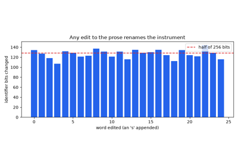
Grigg’s Ricardian contracts: a bond whose terms are its name (1996)
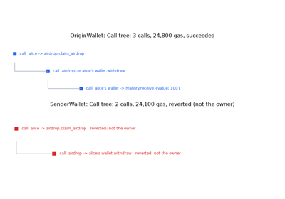
Miller’s capabilities: purses, and the tx.origin confused deputy (1997-2006)
Governance#
Voting with borrowed tokens inside a single transaction.
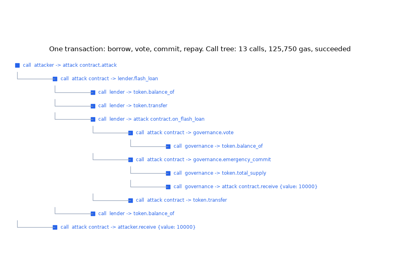
Governance attacks: Beanstalk’s flash-loan vote (2022)
Paying out#
Sending ether safely, loops that outgrow the block, and fair randomness.
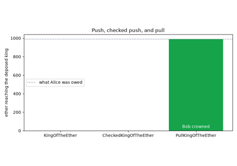
King of the Ether: unchecked send and the pull-payment pattern (2016)
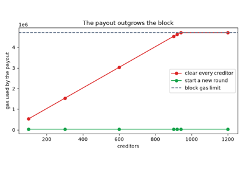
GovernMental: an unbounded loop meets the block gas limit (2016)
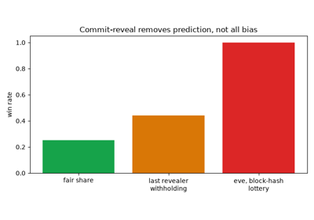
Commit-reveal schemes and on-chain randomness (2016)
Token standards#
Fungible and non-fungible tokens, and the races and traps in their interfaces.
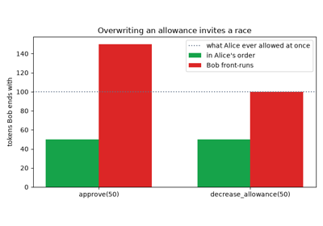
ERC-20 tokens and the approve/transferFrom race (2015)
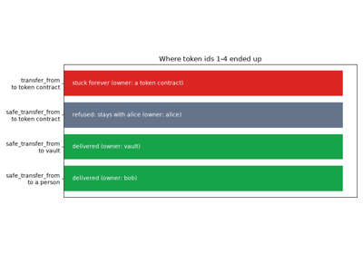
ERC-721 non-fungible tokens and safe transfers (2018)
Upgrades and addresses#
Proxies that keep state across code changes, and addresses known before deployment.
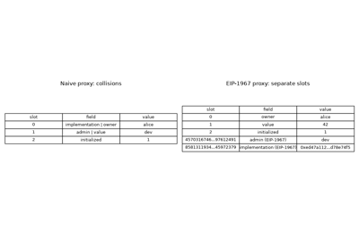
Upgradeable proxies and storage collisions (2018)
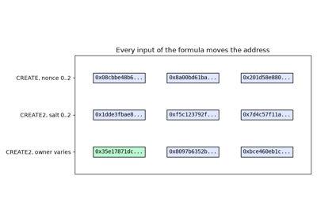
CREATE2 and counterfactual addresses (2019)
Verification#
Proving contracts correct, executing them on symbols, checking them at run time, and fuzzing them with random transactions.
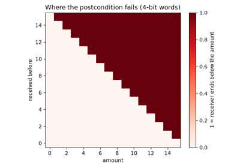
Floyd and Hoare: proving a withdrawal correct with assertions (1967-1969)
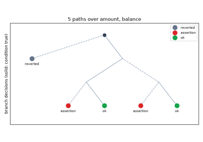
King’s symbolic execution: every path of a fee schedule (1976)
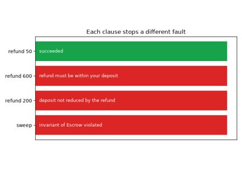
Meyer’s design by contract: an escrow with checked clauses (1986)
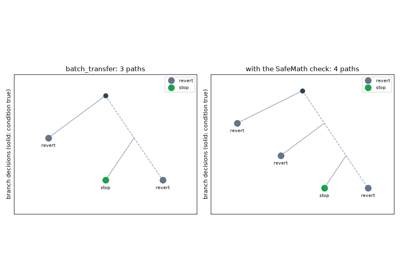
Oyente: symbolic execution finds the BeautyChain overflow in bytecode (2016)
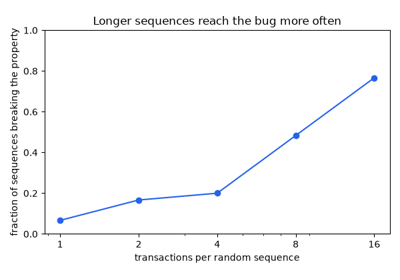
Echidna: property-based fuzzing finds a self-transfer bug (2020)
Multisig wallets#
The two Parity incidents: a wallet re-initialized, and a library destroyed.
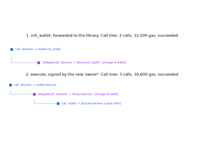
The Parity multisig hack: an unprotected initializer (July 2017)
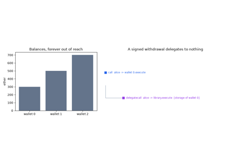
The Parity library freeze: selfdestruct behind DELEGATECALL (November 2017)